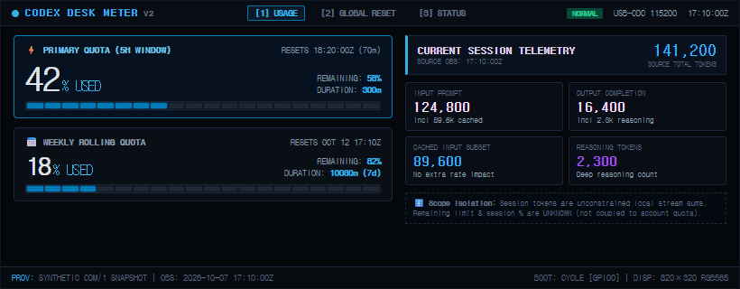
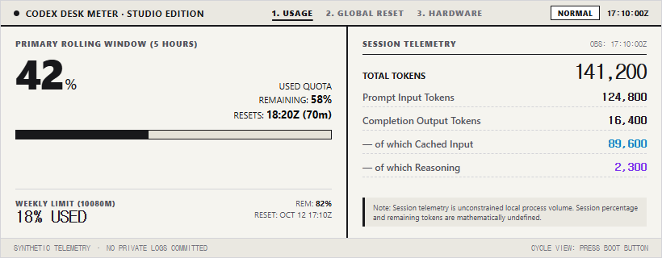
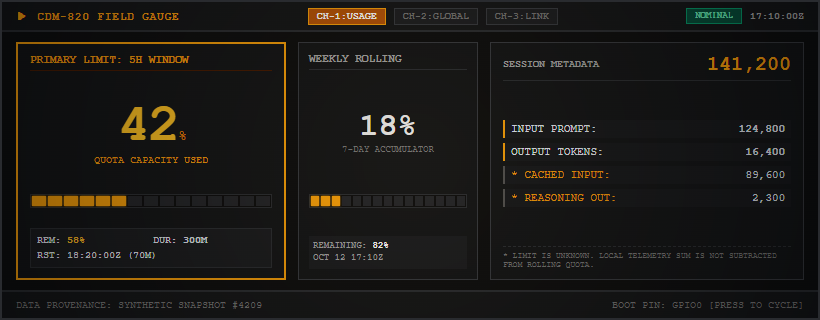
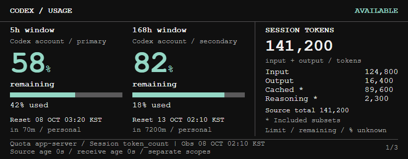
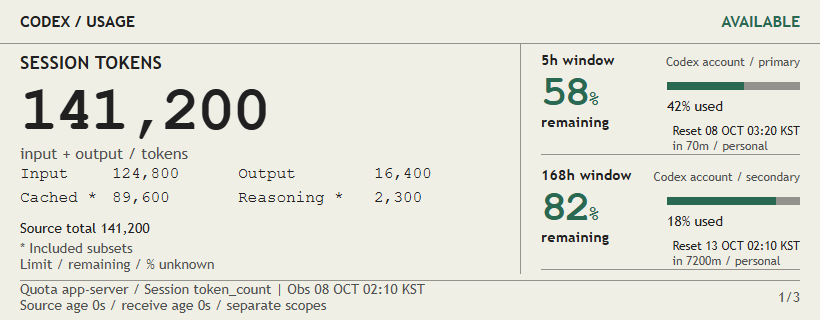
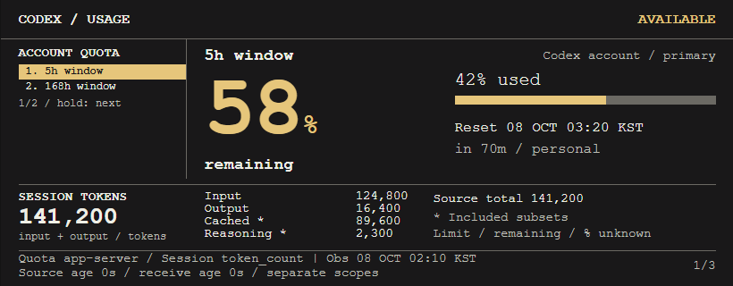

A · Telemetry Matrix (Gemini)
Dense dark HUD; both quota windows and the session ledger share the screen.

Compare the six independent 820×320 previews. All values are synthetic. B · Swiss Studio Meter is the current user-selected design for follow-up.
Independent GUI review: B remains an unvalidated prototype; no product or physical LCD approval is implied. The coordinator is routing B findings F1–F3 and the unmeasured transfer estimate for correction and follow-up. D–F browser interaction checks passed; E/F title metadata cleanup is recorded in the report. Read the GUI review.
Selected-B follow-up · 2026-10-08: F1 still fails: Unknown/Waiting clears a prior good cache before Error/Disconnected. F2 totals, F3 variable-window paging/BOOT, and F5 estimate wording pass the selected-B checks; B remains blocked pending the cache correction, with physical LCD behavior not run. Read the B follow-up review · Corrected B normal screenshot (820×320).
Reference / observation: 2026-10-07 17:10:00 UTC · 08 Oct 2026 02:10 KST
5h account quota: 42% used · 58% remaining · 300 min · reset 2026-10-07 18:20 UTC
Weekly account quota: 18% used · 82% remaining · 10,080 min · reset 2026-10-12 17:10 UTC
Session tokens: input 124,800 · output 16,400 · cached input 89,600 · reasoning output 2,300
Session totals: input + output = 141,200; source total = 141,200. Cached and reasoning are included subsets. Session limit, remaining and percent are unknown; session tokens are never subtracted from quota.
Global reset: codex-resets.com · latest 2026-10-07 10:00 UTC · captured 17:10 UTC · elapsed 7h 10m
Dense dark HUD; both quota windows and the session ledger share the screen.

Warm editorial layout; the primary quota is large and session counts form a separate ledger.

Amber instrument framing separates the 5h quota, weekly quota and session metadata.

Quota-first layout with both windows beside a complete session ledger; long window lists page explicitly.

Session-first editorial ledger with the two quota windows stacked in a compact right column.

One large quota window at a time, an indexed window rail and a full-width session strip; advancing windows uses a held-BOOT preview control.
